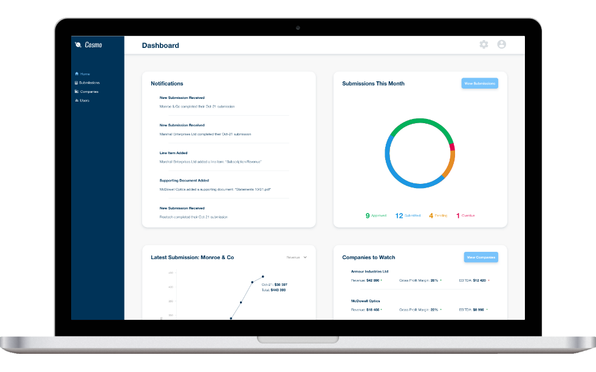

Cosmo Portfolio Management
Taking the Work Out of the Job
Product Designer | Systems Analyst

Your Entire Portfolio, in One Place
The amount of time and manual work required to manage an investment portfolio at a leading lending company, resulted in the need for a streamlined solution.
Cosmo enables portfolio managers to interact with their clients, and manage their investment portfolios at scale. Cosmo’s features include:
- A dashboard for a quick overview of the portfolio’s status and notifications
- A client portal for the submission of financial accounts and documents
- In-depth financial reporting
- User management
The Journey
An intuitive design was crucial for Cosmo, which serves as the primary point of interaction between portfolio managers and their clients.
My contributions to this project included:
- Conducting user research and identifying solutions to user problems
- Introducing a design system
- Designing various aspects of the product, including the UI, UX and data visualisations
- Conducting extensive user testing